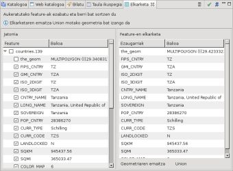

Feature batzuen geometriak eta atributuak elkartzen ditu.
Feature batzuen geometriak eta atributuak elkartzen ditu. Feature batzuen geometriak eta atributuak elkartzen ditu.
Elkarketa tresna feature talde bat aukeratuz bakar batean elkartzeko erabiltzen da. Elkartutako Featurearen geometria eta ezaugarriak ezartzea uzten du. Geometria, bai elkartzeko featuren geometrien elkarketa geometrikoa eta bai elkartzeko featuretariko baten geometria bakarra izan daiteke.
Elkarketa tresnak jadaneko geruzan burutzen du. Elkarketa tresnak aukeratua denean, Bounding Box bat marraztu dezakezu elkartzeko diren Featureak aukeratzeko. Bista bat zabalduko da aukeratutako Featuretatik beraien berezitasunen balioak emaitzako Featureagatik jasoak izan behar direnak zehatu ahal izateko.
Izan daiteke elkartze geometrikoak Geruzako FeatureTypean azaltzen diren baimendutako geometri motekin bateragarri ez den geometria bat sortzea. Adibidez, poligono Geruza baten ikutzen ez diren bi Polygon-k MultiPolygon bat sortu ahalko luke. Kasu honetan, elkartze geometrikoa Featurearen geometriaren elkartutako berezitasuna asignatzea ez da posible izango, baina jatorrizko Featuren geometria bat Elkarketa tresnaren bidez ezarria izan daiteke.
Elkarketa tresnak elkartutako Feature berri bat sortzera doanean, jatorria duten haiek ezabatuak izango dira une berberean.
Gogoratu behar da Elkarketa tresnak ez duela emaitzarik gordetzen, nahi izanez gero eragiketa desegitea uzten bait du, edo barnealdeko datuak dauden tokian aldaketak gorde uDig-ek normalean egingo lukeen bezala.
|
Koordenatu Erreferentzi Sistema (CRS) Elkarketa tresnari sarrerako Featuren geometrien elkartzea bezalako geometria berri bat sortzea agintzen zaionean, elkarketa Geruzako jadaneko CRS -an burutuko da. |
Elkarketa tresna aukeratu hedatze zerrendatik 1 irudian agertzen den bezala.

1 irudia. Elkarketa tresna aukeratu.
Elkartua izango den Featurea aukeratzeko filtro bezala erabiliko den Bounding Box-a marraztu.

2 irudia. Elkartzeko Featureak aukeratzen.
Saguaren botoia askatzean, Bounding Box-arekin bat egiten duten featureak bilatuak izango dira eta Elkarketa Bista agertuko da.
3 irudiak Elkarketa Bista erakusten du, bi paneletan datzana.
Ezkerraldeko panela Jatorriko panela da eta aukeratutako featureak eta bere berezitasunak erakusten ditu, eta jatorrizko featuren berezitasunen balioak aukeratzen uzten ditu elkartutako Featureari asignatuak izateko.
Eskuinaldeko panela Featuren Elkarketa panela deitzen da eta jatorrizko Featuregatik bere berezitasunak ezartzearen emaitza bezala sortua izango den featurearen berezitasunak erakusten ditu.
Elkarketa bista zabaltzen denean, Featurearen elkarketa panela aurkitua izango den lehen Jatorriko featurearen berezitasunekin betea izango da (Jatorriko panelean goitik lehenengoa). Elkartutako Featurearen geometri berezitasunak jatorriko Featuren geometrien elkartze geometrikoaren balioa gain hartzen du, eta geruzako FeatureType-arekin motako gatazka baten ondorioz hori posible ez bada, lehenengo Featurearen geometriaren balioa gain hartuko du.

3 irudia. Elkarketa bista.
Elkarketa bista zabaltzen den bitartean, erabiltzaileak Featuren Elkarketan berezitasun espezifikoak ezarri ditzake lehenengo dagoenaren gainerako beste jatorri Feature batzuen balioak gain hartzeko, Jatorrian aurkitzen den nahi den berezitasuri dagozkion checkbox-ak aktibatzen.
Jatorri bakar bateko berezitasun multsoa ere aukeratu daiteke nahi den Jatorriari dagokion checkbox-a aktibatuz.
4 irudiak nola bi berezitasun lehen huraz gain beste Jatorri batetik Featuren Elkarketara asignatuak izan diren erakusten du.

4 irudia. Elkarketa Bista erabiltzaileagatik ezarritako berezitasunekin.
Azkenik, Featuren Elkarketarako berezitasun geometriko eta ez geometrikoen balioak ezartzen amaitzen duzunean, Amaitu botoia sakatu Elkarketa Bistan. Elkarketa tresnak Featuren elkarketa berria sortuko du eta Jatorriak ezabatuko ditu urrats bakar eta atzeraezin batean.
5 irudian Mapak adibideko bi eraikin nola bakar batean elkartuak izan diren erakusten du, eta Taula Bista Feature sortu berriarekin.

5 irudia. Elkarketaren emaitza.
Elkartzeko feature gehiago gehitzeko, Bounding Box baten bidez nahi dituzun featureak aukeratu eta bistara gehituak izango dira.
Featureak ezabatzeko, aukeratu ezabatu nahi duzun featurea eta Ezabatu botoian klik egin ezazu edo Bounding Box baten bidez Ctrl tekla sakatuz, aukeratutako featureak ezabatuko dira.

6 irudia. Ezabatu botoia.
{kind=link}
{kind=link}